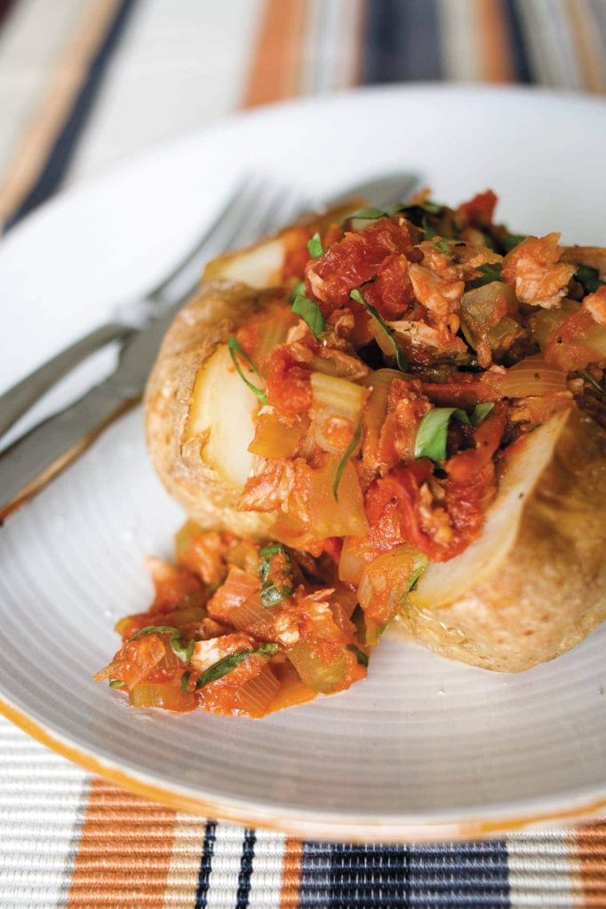

Patatun

What is patatun?
Patatun is a healthy dish that is quick to make and only requires
4 ingredients.
It's a jacket spud filled with a creamy cheese tomato sauce mixed with
tuna for extra protein!
Ingredients
- 1 big potato
- 300ml tomato sauce
- 2 spoons of cream cheese
- 1 large tin of tuna
Steps
- First, cook your spud, baked, boiled, or microwaved
- Secondly, empty the sauce into a pan and add the cream cheese
- Then, add the tuna to the sauce and reduce until thick
- lastly, serve the sauce onto the potato and enjoy!